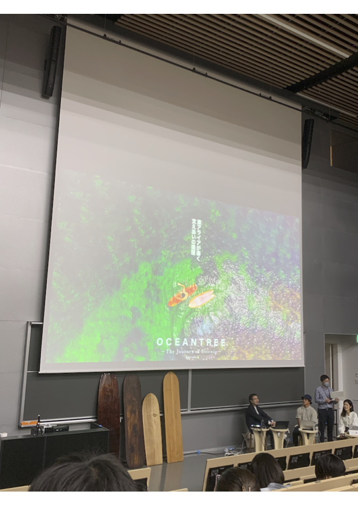
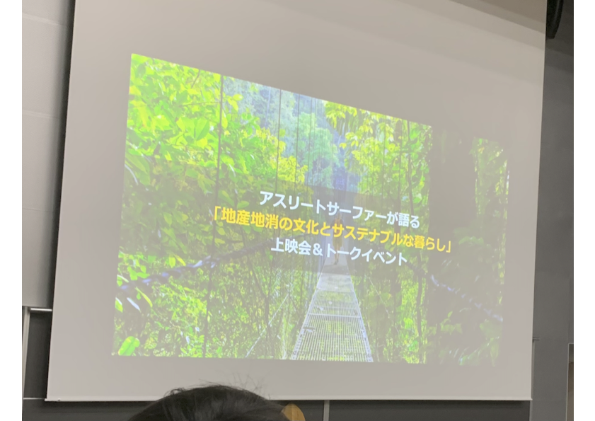
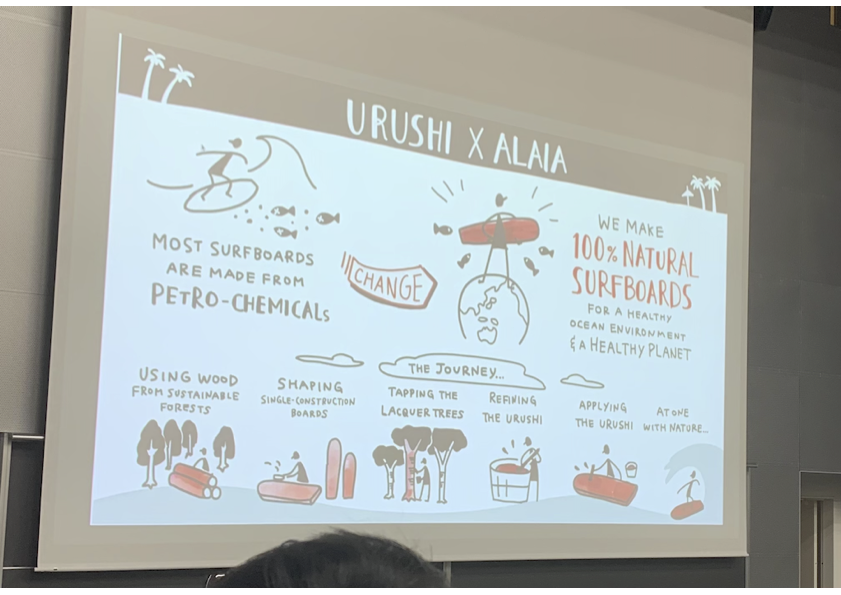

Ocean Tree



◯感想
今回、ocean treeのepisode2を見て、人と人との関わり、支え合いの大切さがよく分かった。一つのものを作るのに、たくさんの人が関わり、努力する。
今まで自分の使っている物がどうやって作られているのか、あまり考えてこなかったが、これを機によく考えてみようと感じた。
また、1から自分の関わった物は、より愛着が湧くのだろうと石川さんを見て感じた。私も自分で何かを作ってみたい。
そして、石川さんが森と海は繋がっているとおっしゃっていて、森と海だけでなくさまざまなところで繋がりがあり、その繋がりに気づくことができるか、またそれを大切にするかしないかで大きく価値観も変わってくるのだろうと考えた。
自分の好きなものをとことん突きつめ、行動に起こす石川さんの生き方はとてもかっこいいと思ったし、自分もこんな大人になれたらいいなという目標ができた。
今はまだやりたいことが定まっていないけど、自分が楽しいと思えることに出会えるように、たくさんのことにチャレンジして、たくさんの人と関わって、自分自身についてよく考えていこうと思った。今回のイベントを通して、不安だった将来に希望が見えたような気がした。来てみてよかったと感じた。